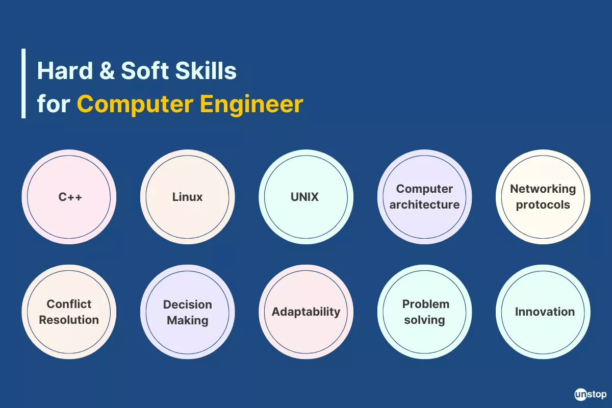
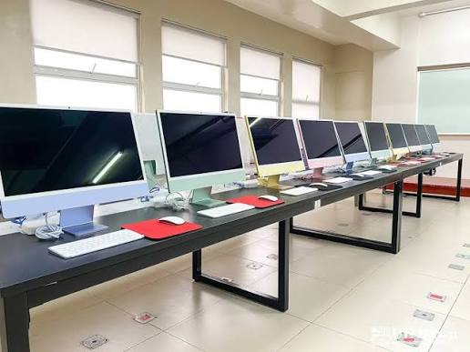
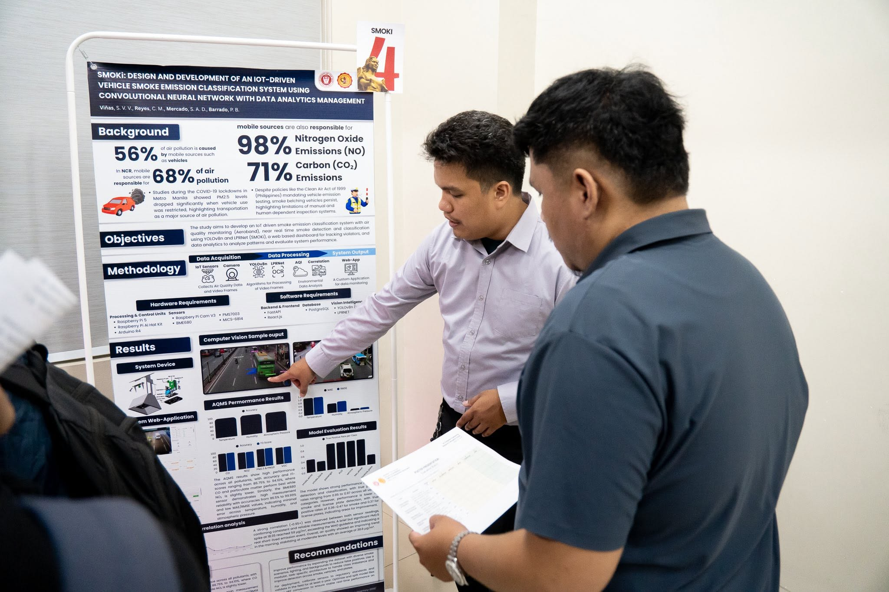

The Bachelor of Science in Computer Engineering (BSCpE) program at the University of the East is designed to train students in the seamless integration of hardware engineering and software development. Housed within the College of Engineering, the curriculum combines rigorous fundamentals in digital logic design, embedded microcontrollers, circuit theory, and computer networks with extensive hands-on laboratory experiences. Guided by experienced faculty and modern facilities, UE BSCpE equips graduates with the technical competence and industry-aligned skills necessary to excel as firmware engineers, systems architects, and technology innovators.
The Bachelor of Science in Computer Engineering program at the University of the East provides a comprehensive curriculum that integrates hardware engineering, digital logic design, embedded systems, and software development. PACUCOA-accredited across UE's Manila and Caloocan campuses, the program features hands-on laboratory learning and expert faculty mentorship to prepare students for careers in microchip design, robotics, network engineering, and firmware development
The UE BSCpE program is designed to cultivate technical competence, professional leadership, and continuous innovation in its graduates. Within a few years of graduation, alumni are expected to apply advanced principles of hardware-software integration, embedded logic, and network engineering to solve complex real-world problems. The program emphasizes ethical practice, effective communication, and teamwork within multidisciplinary environments, while instilling a commitment to lifelong learning and adaptation as technology continues to evolve.

The UE BSCpE program builds a balanced foundation of technical mastery and professional competence. Students gain hands-on expertise in digital logic design, embedded systems programming, microcircuit design, network administration, and hardware-software integration. Alongside technical execution, the curriculum fosters core professional skills, including analytical problem-solving, engineering project management, technical documentation, clear communication, and ethical decision-making within multidisciplinary engineering teams.
The UE BSCpE learning experience combines classroom theory with extensive laboratory coursework, practical design projects, and industry-focused training. Students work directly with microcontrollers, digital logic trainers, breadboards, and networking hardware to build embedded systems, analyze circuit behavior, and implement low-level code. Learning culminates in capstone design projects and on-the-job training (OJT), where students apply hardware-software integration principles to solve real-world engineering challenges.

The UE BSCpE program equips students with modern engineering laboratories and specialized technical hardware designed for hands-on, practical learning. Students work in dedicated computer and electronics laboratories featuring logic design trainers, microcontrollers, FPGA development kits, breadboards, and circuit testing equipment. Additionally, the program provides network and systems laboratories outfitted with industry-standard computer hardware, software simulation tools, and networking infrastructure to support digital circuit synthesis, embedded firmware development, and hardware-software integration projects.
UE BSCpE students apply hardware-software integration to build practical engineering solutions, including embedded IoT monitoring devices, automated robotic systems, digital logic controllers, and network communication prototypes. Capstone and laboratory projects challenge students to program microcontrollers, design circuit layouts, and integrate sensors to solve real-world problems.

Research and innovation in the UE BSCpE program focus on applied hardware-software integration, smart embedded systems, and emerging computing technologies. Through capstone projects and departmental initiatives, research efforts target practical innovations in automated monitoring, artificial intelligence applications, signal processing, and IoT deployment to address contemporary technological and societal needs.
The UE BSCpE program opens doors to valuable academic and development opportunities that enhance both technical education and career mobility. Qualified students can access institutional financial aid and academic grants. Through the university's Office for International Affairs and External Linkages, engineering students can engage in international exchange programs, cross-border research collaborations, and global networking initiatives with partner universities. Furthermore, students gain competitive exposure through regional and national engineering competitions, hackathons, and industry-sponsored technical showcases that highlight innovation and hardware-software integration.